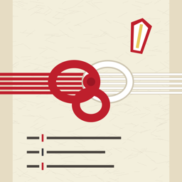

七五三も回忌も並ぶ記念日
家族の行事と記念日を、1本の暦に。iPhone と iPad のアプリです。
家族・恋人・推し・亡くなった人の「起点の日」（生まれた日・結婚した日・亡くなった日・付き合った日など）を入れると、そこから生まれる日本の行事の日を計算して、家族みんなの分を日付の順に並べます。きょうで何日目か（◯年◯か月◯日も）も出します。
- 生まれた日から：お七夜・お宮参り・お食い初め・ハーフバースデー・初節句・七五三・小学校／中学校／高校の入学・十三参り・18歳（成人）・二十歳の集い・還暦・古希・喜寿・傘寿・米寿・卒寿・白寿・百寿・毎年の誕生日
- 結婚した日から：紙婚式・錫婚式・銀婚式・真珠婚式・金婚式など、毎年の結婚記念日と名前
- 亡くなった日から：初七日・四十九日・百か日・初盆・一周忌・三回忌・七回忌・十三回忌〜五十回忌・命日
- どの日からも：100日目・1000日目・1万日目などのキリの日
- 法要や七五三は2か月前など、行事ごとに準備を始める目安の日も出して、通知で知らせます（通知は使うときだけ許可をたずねます）
- 当日を1日目と数えるか0日目と数えるか、年祝いと七五三を満年齢で数えるか数え年で数えるか、お盆を8月にするか7月にするかを選べます
- 登録・課金・人数の上限はありません。入れた人と日は、この端末の中だけに保存します。画面のいちばん下に小さな広告が出ます（画面いっぱいの広告・動画の広告は出さず、広告の音は消しています）
行事の日は目安です。地域・宗派・家によって違います。